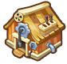
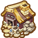
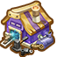

果实介绍

工坊激活
玩家宠物等级达到7级后可以激活1级石头、钢材工坊。
玩家宠物等级达到7级后可以激活1级石头、钢材工坊。

石头工坊
石头工坊激活后，通过消耗‘木材、核桃、可可、人参’来生产石头。每生产1个石头会有时间过程，可使用‘加速符’进行加速！
石头工坊激活后，通过消耗‘木材、核桃、可可、人参’来生产石头。每生产1个石头会有时间过程，可使用‘加速符’进行加速！

钢材工坊
钢材工坊激活后，通过消耗‘木材、核桃、可可、人参’来生产钢材。每生产1个钢材会有时间过程，可使用‘加速符’进行加速！
钢材工坊激活后，通过消耗‘木材、核桃、可可、人参’来生产钢材。每生产1个钢材会有时间过程，可使用‘加速符’进行加速！